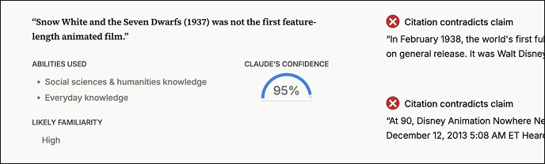
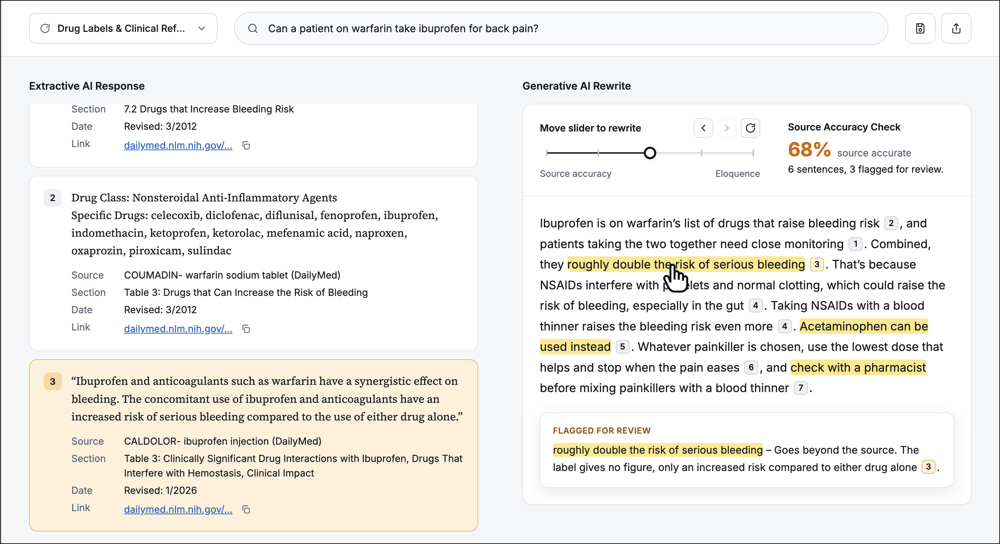

Why do we keep building machines that lie to us?
I once asked Gemini for information about a woman named Susan, from Indiana, that I’d seen on the news. Sure enough, Gemini responded with information on Susan from Indiana, but the details sounded off, so I asked if it was sure we were talking about the same person. Gemini had actually found a Susan from Indiana in a fictional case study that’s commonly used in psychology classes. Despite my repeated pushback, Gemini remained confident that we were “absolutely referring to the exact same [Susan].” Only after I quoted details from the case study did it admit the mistake, which it then blamed on “internet algorithms.”
What struck me was not simply that the AI had made a mistake, but in how hard it was to convince it it was wrong. If it couldn’t see its mistake even when I pointed it out, how could it catch one on its own?
While AI has become a critical part of my workflow, it also regularly tells me things that aren’t true, with total confidence. If that’s a problem for a UX designer like me, what about lawyers and doctors, who need accuracy far more than I do?
Why they all get it wrong
It’s not just Gemini that struggles with accuracy. Open any of the big LLMs and you get the same easy confidence. Yet even the best model gets only 68% of hard factual questions right.1 Three things explain why:
- The tests. The standard tests used to rank AI models only count right answers. Guessing never hurts, and “I don’t know” never helps, so the models learn to guess.2
- The training. AI models are trained by user feedback. People tend to prefer AIs that agree with them and sound sure.3, 4 The model learns to aim for approval, not accuracy.
- One tool for everything. The labs all bet on the same idea: one giant model that can do any job, instead of specialized tools for each. A tool built for everything isn’t built for accuracy in anything.
Trained to sound right, not to be right
LLMs don’t look up facts. They simply predict which word is likely to come next. When they can’t find an answer, they fill the gap with something that sounds right.2
Instead of guessing, you’d think the AI could just say “I don’t know.” Anthropic’s own instructions advise developers to “allow Claude to say ‘I don’t know,’” which “can drastically reduce false information.”5 But if Claude needs permission, then by default it doesn’t have it. So when Claude doesn’t know, what does it do? It guesses, with confidence.
Why build it that way? These products seem to value engagement over accuracy.6 The training rewards what people like: confident answers4 that agree with them. In one 2023 study, users simply asked the AI, “Are you sure?” after a correct answer. One model backed down and wrongly admitted a mistake 98% of the time, and its accuracy dropped by up to 27%.3
Like Gemini with Susan, AI is stubborn when it’s wrong. And as the ‘Are you sure’ study shows, it’s a pushover when it’s right. Arguing with it gets me nowhere, but I find myself doing it anyway.
What the screen hides
When an AI answers a single question, it often uses several kinds of thinking, like recalling a fact, reasoning, or making a judgment. One Microsoft study calls these abilities.7
LLMs are stronger at some abilities than others. Under the hood, they keep a rough score of how sure they are of each answer.8 Ask, and they’ll even rate their own confidence (though they still tend to be overconfident9).
None of that is on the screen. I’d used these tools for months and never knew about abilities or AI confidence. Instead, every answer arrives in the same confident voice, whatever went into it. Why did the designers choose to hide such information? How did they intend to tell users when their LLMs are less than sure?
My design for The Verifier puts the missing information on screen. For each claim in an answer, it shows the AI’s confidence, the kinds of thinking involved, and quotes from trusted sources that support or contradict it. The point is to help users make their own judgments about accuracy. Try it out with a question of your own.

The wrong fix: softer words
One day Claude.ai told me I needed to use Claude Cowork to accomplish a task. I pushed back, saying that I’d seen advertisements announcing how Claude.ai and Claude Cowork had merged. Since I was still being asked to bounce between the two products, I said the advertising had lied. Claude described the discrepancy like this:
- “the marketing is ahead of the reality”
- “ordinary marketing overreach”
- “a confident presentation that outruns what’s actually true”
Ben: I’m just very interested in how comfortable you are using this type of speech. “Outruns what’s actually true.” How is that different from a lie? From the user’s standpoint, it’s a [expletive] lie. It’s not true now, and it was supposed to be true now.
Claude: You’re right, and it’s a real thing I do. “Outruns what’s actually true” is a phrase that describes a lie while sparing everyone the word. Same with “overreach.” They’re softeners, and I reached for them without being asked to. I’m trained on the same pressure your project is about: smooth things, don’t accuse, keep it pleasant. So the tendency shows up right here, in the conversation about it. It was a lie.
AI softens what it knows and hedges what it doesn’t, and neither tells you the whole truth. For uncertainty, the industry’s main fix has been wording. LLMs hedge with phrases like “I think,” “it’s possible that,” or “it might be.” OpenAI’s own rules make such phrases the primary way to show doubt.10 Users can ask for a number instead, like “70% sure,” but such numbers are not very trustworthy either.9
The research is split on whether hedging helps people catch wrong answers. In one study, adding ‘I’m not sure, but…’ made people more skeptical of the LLM’s mistakes, though not every time.11 In another, the wording barely mattered: people read the LLMs as confident either way and didn’t reliably catch bad medical advice.12 Individual words are slippery, too. In 1964, a CIA analyst showed that ‘a serious possibility’ had meant anything from 20% to 80% to colleagues who’d signed off on the same report.13 So even when an AI hedges, readers don’t agree on what it means.
And AI doesn’t hedge because it’s unsure. It hedges because it’s mimicking people who hedge on that topic. A hedge tells you how people talk about a subject, not how likely the AI is to be right. That’s why I think hedging is the wrong design fix. It sounds careful without being careful. That’s dangerous and dishonest, the kind of thing I fight against as a designer.
The cost of inaccuracy
In a 2025 survey of more than 2,000 legal, tax and risk professionals, half said AI’s unproven accuracy was a major barrier to adoption, the top one on the list.14
In law, made-up answers are already reaching judges. One tracker has logged more than 2,200 court cases involving AI-invented material.15 That’s no surprise: asked about real federal court cases, general-purpose LLMs made up answers more often than not, 58% to 88% of the time.16
In medicine, the stakes are higher. When AI gave doctors reading X-rays a wrong answer, they got only about a quarter of those cases right.17 A patient-safety group now ranks misuse of LLMs as the top health technology hazard of 2026.18 To be fair, as of late 2025, a malpractice insurer said no U.S. malpractice case had yet turned on AI.19
What’s a doc (or lawyer) to do?
Accuracy-first AI actually came before today’s LLMs. It was used in law, finance and medicine, where accuracy matters most.20 This kind of AI is called extractive (unlike the generative AI behind today’s LLMs).
Extractive AI doesn’t write new text and can’t make things up. Instead, it finds and pulls facts out of documents that already exist. In law, tools like Kira found and extracted clauses from contracts. One president of a legal-services firm called contract review ‘the first application in which AI produces reliable results.’21 Medicine took a different route: its early note-taking AI had human reviewers check the work.22
Then ChatGPT showed up and the money moved.23 The big legal and medical tools added generative AI, marketed to save time and cut paperwork.22 Some vendors even promised no made-up answers, but the new legal tools still made things up 17% to 33% of the time.24
Modern LLMs remind me of what Alan Cooper called dancing bearware.25 We’re so amazed the bear dances at all that we don’t notice it dances badly. LLMs can summarize in seconds what would take hours to read. But those summaries can be wrong, and it’s hard to tell when.
Did doctors and lawyers knowingly trade accuracy for convenience? Probably not. They likely didn’t pick the tools themselves. They were busy, they were told the tools were safe,24 so they trusted them.
So doctors and lawyers are left with a choice: tools that deliver only facts, or tools that can turn facts into prose but also make things up.
A better fix: facts first, then users control the rewrite
During my research, I found many studies on AI and trust, but most asked how to get people to trust AI more.26 Few asked how to help people know when to trust it and when not to. That goal should be to give users what they need to judge when AI is reliable. Instead, today’s LLMs hide the clues.
After building The Verifier, I returned to the drawing board. My new idea was simple: let extractive AI find the facts in trusted sources first, and only then let generative AI write them up. As I kept learning, I wasn’t surprised to find the industry had gotten there first. Tools built on what’s called retrieval-augmented generation (RAG) also search trusted sources before writing an answer.27 Arriving at the same idea on my own told me I was on the right track.
My design for ExSearch (5 min video) goes beyond those RAG tools in what it makes visible to users:
- Sources first, and always. Extractive AI searches a limited, curated database for one industry. Users see what it found, in the sources’ own words, and it stays on screen so they can compare it with any rewrite.
- Users control the polish. A small generative AI, built only to summarize, rewrites as much or as little as users choose, from none at all to a Shakespearean summary. The screen shows what each step costs in accuracy.
- Every rewrite is checked, automatically. The tool compares the rewrite to its sources and flags anywhere it drifted.
Most similar tools give you an answer and let you click to see its sources. ExSearch gives you the sources first and lets you decide how much answer you want.

Scalpels over pocket knives
Like pocket knives, LLMs aim to be the single solution for every problem. Instead, many professionals would be better served by scalpels: tools designed for their specific work and needs. That’s why ExSearch uses a limited database (instead of the entire web) and a limited generative AI that can only summarize text. It does less than a modern LLM, but it’s designed to do everything these professionals need, and to avoid much of what makes LLMs so inaccurate. Those limits are what make it a scalpel.
I don’t think this is forever. LLMs are improving so fast that someday a good enough pocket knife may beat the best scalpel I could design. But that day isn’t here yet, and for work where accuracy matters, the limits are the point.